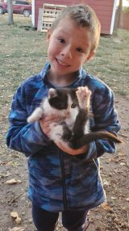
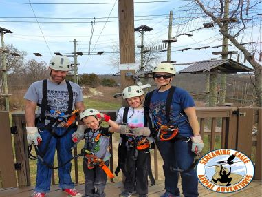
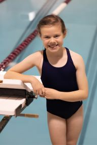

My name is Sabrina Cullinan and I am blessed with a wonderful family! My husband, Max, and I have been married for 10 1/2 years and we have two wonderful kids. Hadassah loves to swim and is part of our local swim team through the YMCA. She also enjoys school, but she particularly loves math and reading. Benaiah is my energetic, talkative child. He loves to sit and talk about Pokemon or use his imagination and pretend he is a Pokemon! Benny also likes to run and is playing his first season of soccer.
In my free time I enjoy working in my yard, walking my two dogs, putting together puzzles, volunteering at my church, and riding horses.